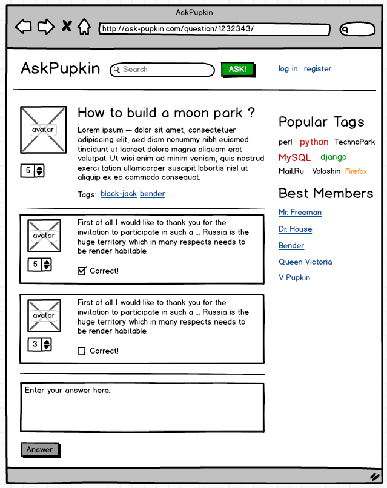
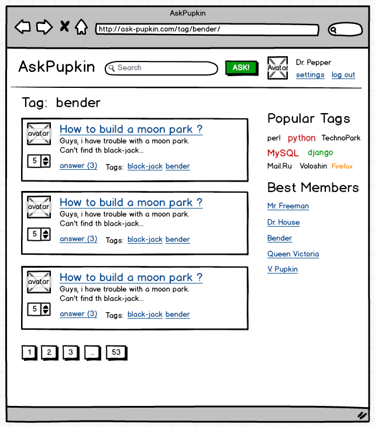
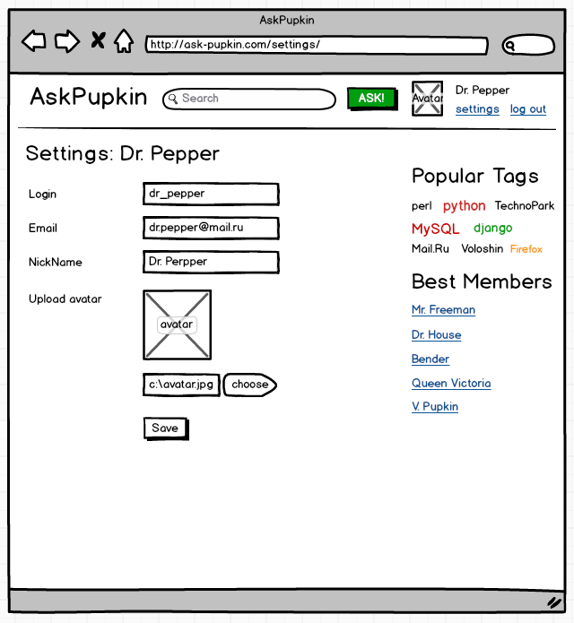
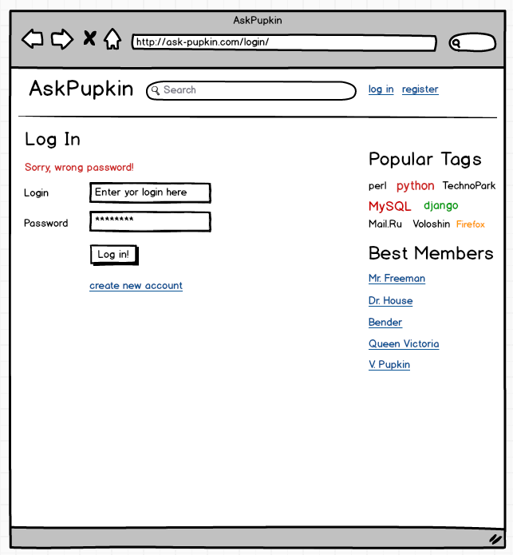
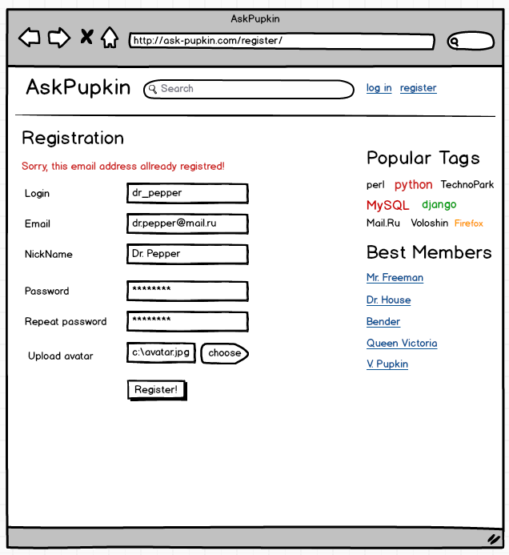

Домашнее задание 1
Верстка статического сайта
Целью домашнего задания является подготовка статический верстки сайта (так называемой «рыбы»). Верстку можно размещать в обычных html файлах, в директории public, но рекомендуется сразу размещать верстку в шаблонах Django. Во втором случае понадобится создать примитивные view и роутинг в urls.py
1. Верстка общего вида (layout) страницы
В файле base.html нужно создать основную верстку (любой) страницы. Для упрощения задачи нужно скачать и использовать CSS библиотеку Twitter Bootstrap. Файлы (как свои CSS стили так и файлы Bootstrap) нужно разместить в директории static.
При верстке страницы важно обратить внимание на:
- Терпимые отступы (padding/margin) между блоками
- Юзерблок в шапке (для авторизованного и неавторизованного пользователя)
- Поисковая строка и логотип
- Блоки в правой колонке
2. Верстка списка вопросов на главной странице
B файле index.html нужно создать верстку для списка вопросов. Основную верстку (layout) можно просто скопировать из base.html. При использовании шаблонизатора - вам необходимо унаследовать (extends) шаблон от базового.
Обратить внимание на:
- Терпимые отступы (padding/margin) между блоками
- Аватарки
- Кнопки лайков
- Тэги, счетчики ответов, остальные ссылки
- Пагинатор (список номеров страниц)
3. Верстка страницы одного вопроса
HTML разместить в файле question.html
Обратить внимание на:
- Список тегов у вопроса
- Листинг ответов по верстки аналогичен листингу вопросов
4. Верстка формы добавления вопроса
HTML разместить в файле ask.html.
Обратить внимание на:
- Вывод сообщения об ошибках формы и подсказок к полям. В верстке должны отображаться ошибки, чтобы было понятно как они сверстаны. Можно найти пример на макетах ниже.
- Ширину полей ввода
- Максимальную длинну полей ввода
5. Верстка форм логина и регистрации
HTML разместить в файлах login.html и signup.html соответсвенно.
Обратить внимание на:
- Вывод сообщения об ошибках формы и подсказок к полям. В верстке должны отображаться ошибки, чтобы было понятно как они сверстаны. Можно найти пример на макетах ниже.
- Ширину полей ввода
- Максимальную длинну полей ввода
6. Примерный внешний вид страниц
-
Страница листинга вопросов

-
Страница добавления вопроса

- Страница одного вопроса 
- Страница листинга вопросов по тегу 
- Страница пользователя с настройками 
- Форма авторизации 
- Форма регистрации 
- Подробное описание страниц и блоков в техническом задании